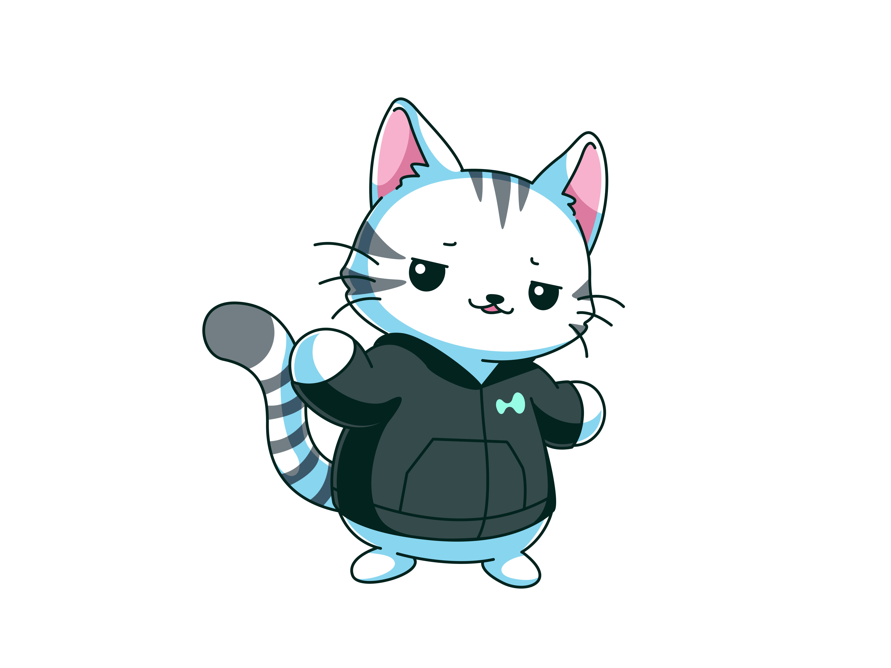
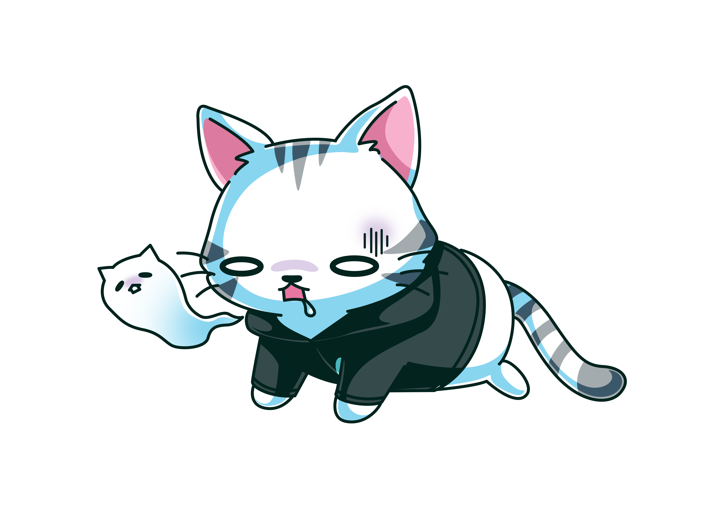
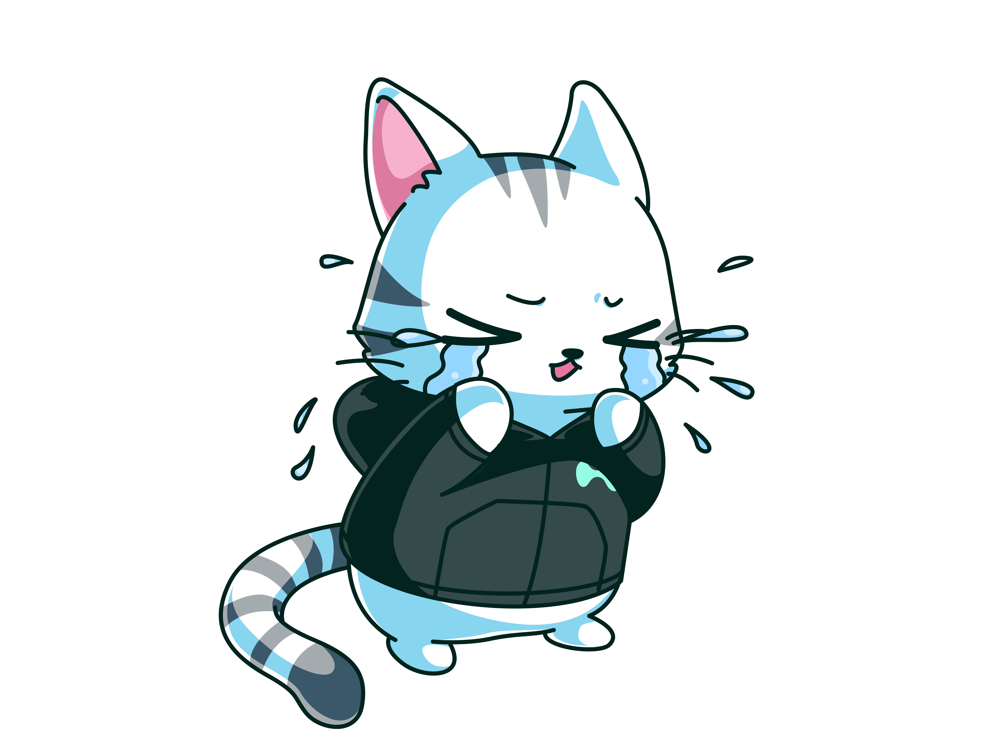
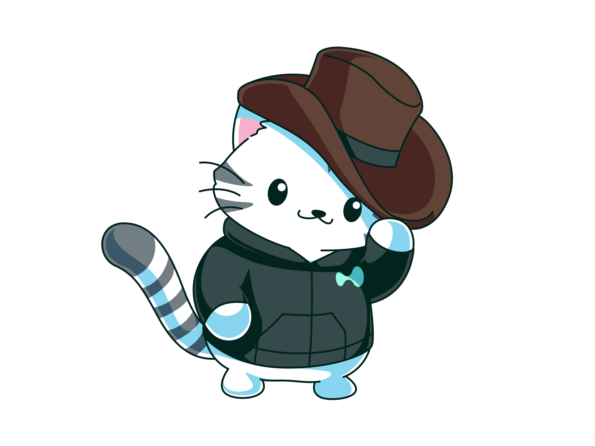
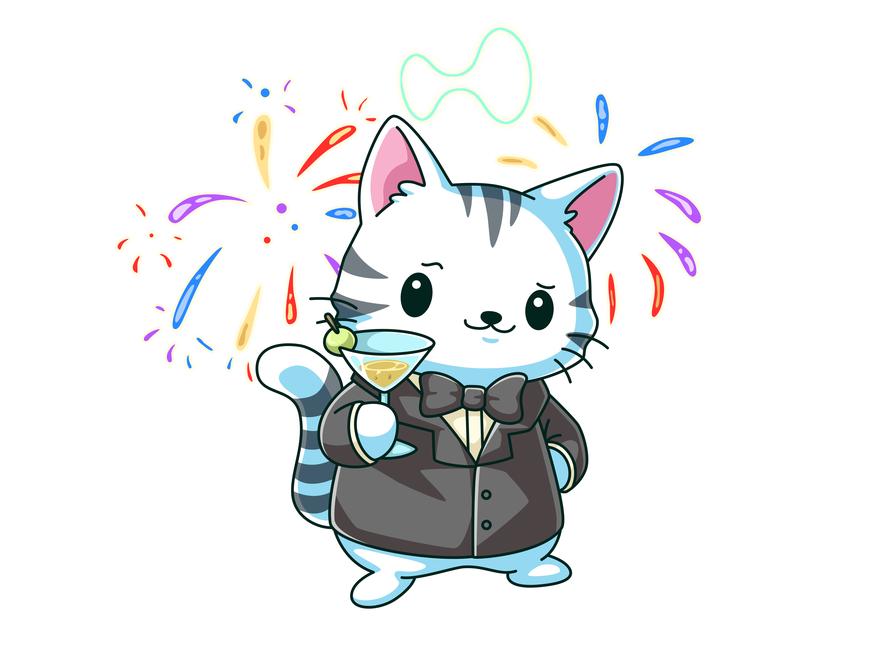
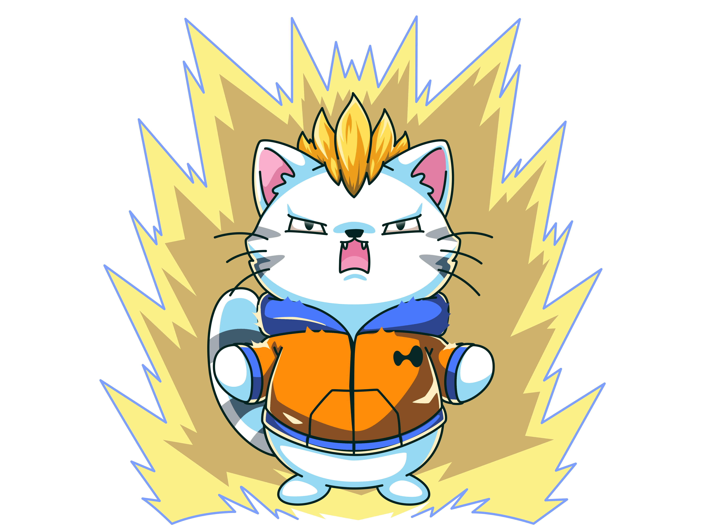
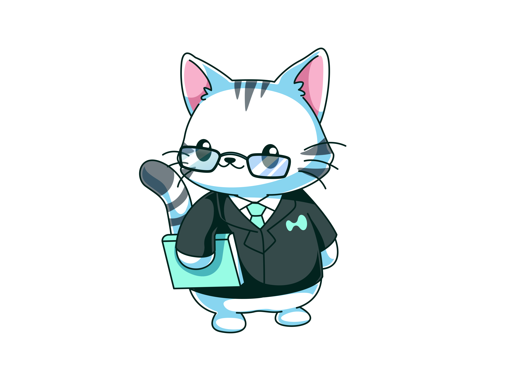

Identicons & Hypurr
Part 1: the "Liquid Silhouette" address identicon (your pfp, systematized). Part 2: four light Hypurr integrations. Pick your favorites.
1 · Address identicons, "Liquid Silhouette"
Deterministic: an address always renders the same colors, everywhere on the site. SVG, zero request, ~0.3KB each.
In context (table row)
2 · Hypurr in the terminal, four light touches
All optional, all cheap: a static image swapped by context. No animation library, no layout shift.
B1 · Mood states
reco · zero costHypurr only appears when there is nothing else to show: empty search, 404, API down, loading. One image per situation, picked from the 42 moods.

search: no result → shrug 404 → sherlock
404 → sherlock
 API degraded → this is fine
API degraded → this is fine
 long loading → meditation
long loading → meditation
B2 · Market-mood Hypurr
landing / dashboardOne small Hypurr next to the HYPE KPI whose mood follows the 24h move. Hover shows the exact number. Five thresholds, five images.

< -10%
-10..-3%
flat
+3..10%
> +10%B3 · Cmd+K easter egg
for the communityTyping "hypurr" or "gm" in the palette shows a random mood with its name. Nothing in the UI otherwise. The kind of detail people screenshot and post.

B4 · Purrfessor in the wiki
wiki onlyThe purrfessor presents each Learn chapter: a small figure beside the chapter title, teacher-bow on completion of a read list. Gives the wiki a face without touching data density.

Weight note: source PNGs are 0.5-2.5MB each; shipping = resize 400px + WebP (~15-30KB), lazy-loaded, only when their state triggers.